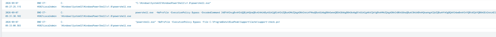
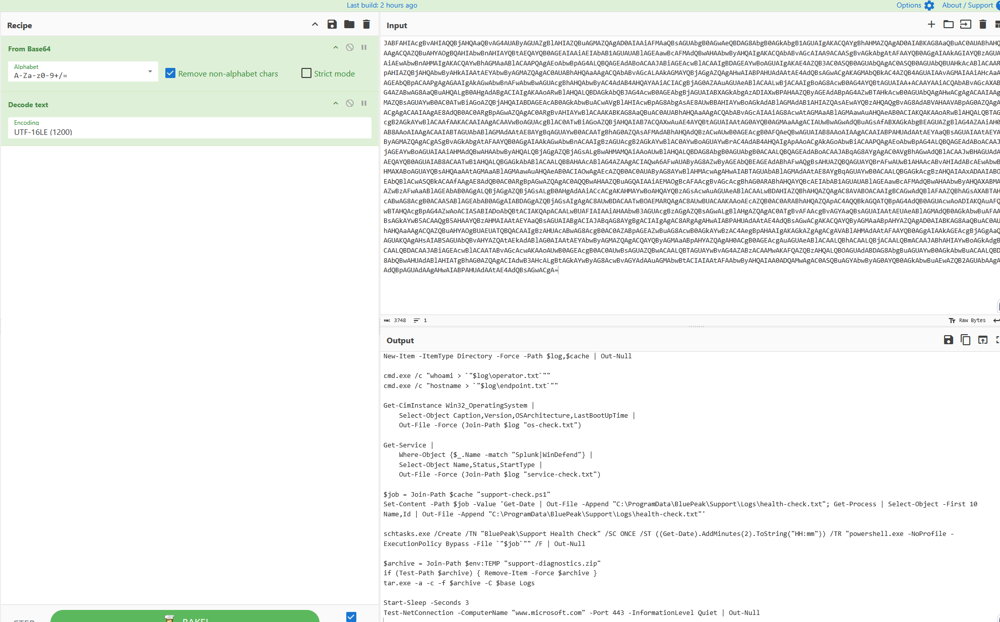
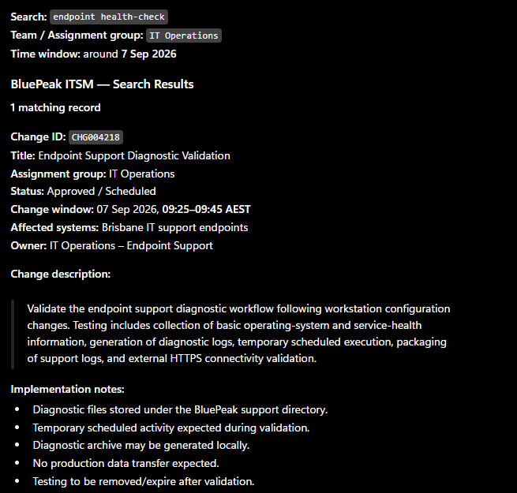
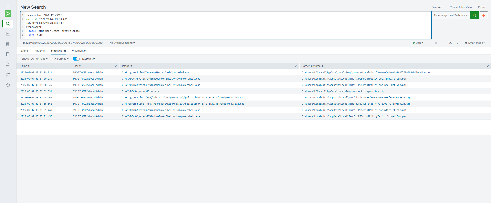
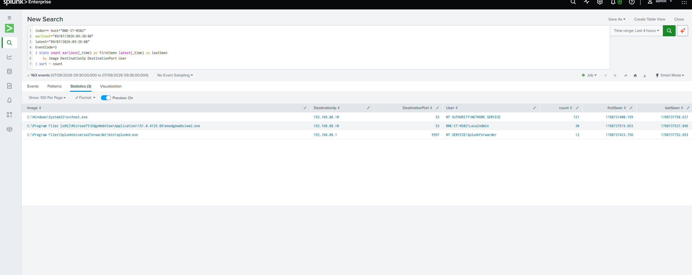
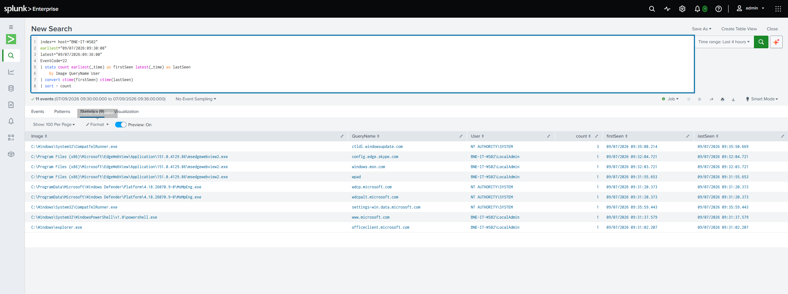

BP-004
Suspicious Administrative Activity
Published Sep 2026
Suspicious administrative activity involving PowerShell and native Windows utilities.
Assessment: Benign activity
SUMMARY
Executive summary
PowerShell activity on BNE-IT-WS02 triggered review after encoded execution, execution-policy bypass, system and service discovery, scheduled-task creation, diagnostic file generation and archive creation were observed.
An ITSM review identified approved change CHG004218, covering endpoint support diagnostic validation during the same timeframe. The encoded PowerShell was decoded and process, file, DNS and network telemetry was correlated against the documented change. The activity remained consistent with the approved IT operation, with no additional behaviour inconsistent with the change scope identified.
Disposition: Closed as benign activity with high confidence. No containment was recommended.
TIMELINE
Key evidence
Administrative execution begins and PowerShell launches with -NoProfile -ExecutionPolicy Bypass -EncodedCommand.
The decoded command collects operating-system and service-health information, writes diagnostic output and creates support-check.ps1.
schtasks.exe creates the one-time BluePeak\Support Health Check task. tar.exe subsequently creates support-diagnostics.zip.
Sysmon DNS telemetry records powershell.exe querying www.microsoft.com, matching the decoded connectivity-test command.
The scheduled support-check.ps1 activity executes. Surrounding telemetry is reviewed for behaviour outside the approved change.
INVESTIGATION
Key SPL
index=* host="BNE-IT-WS02"
earliest="09/07/2026:09:30:00" latest="09/07/2026:09:36:00"
EventCode=1 User="BNE-IT-WS02\\LocalAdmin"
| table _time User Image CommandLine ParentImage
| sort _timeindex=* host="BNE-IT-WS02"
earliest="09/07/2026:09:30:00" latest="09/07/2026:09:36:00"
EventCode=11
| table _time User Image TargetFilename
| sort _timeindex=* host="BNE-IT-WS02"
earliest="09/07/2026:09:30:00" latest="09/07/2026:09:36:00"
EventCode=3
| stats count earliest(_time) as firstSeen latest(_time) as lastSeen by Image DestinationIp DestinationPort User
| convert ctime(firstSeen) ctime(lastSeen)
| sort - countindex=* host="BNE-IT-WS02"
earliest="09/07/2026:09:30:00" latest="09/07/2026:09:36:00"
EventCode=22
| stats count earliest(_time) as firstSeen latest(_time) as lastSeen by Image QueryName User
| convert ctime(firstSeen) ctime(lastSeen)
| sort - countSuspicious PowerShell Activity
Initial process telemetry identified encoded PowerShell with execution-policy bypass and later execution of support-check.ps1.

Encoded PowerShell Decoded
The Base64 PowerShell was decoded as UTF-16LE, revealing OS/service-health collection, diagnostic output, temporary scheduled execution, archive creation and a connectivity test to www.microsoft.com.

ITSM Change Correlation
Approved change CHG004218 covered endpoint support diagnostic validation from 09:25–09:45 AEST and closely matched the decoded activity.

File Creation Correlation
Sysmon Event ID 11 confirmed tar.exe created support-diagnostics.zip, corroborating the decoded command.

Network Connection Review
Event ID 3 telemetry was aggregated into distinct communication patterns. Observed connections were DNS traffic to the lab resolver and Splunk forwarding traffic. No corresponding external TCP/443 connection to Microsoft was observed in this window.

DNS Query Correlation
Event ID 22 recorded powershell.exe querying www.microsoft.com at approximately 09:31:37, matching the decoded connectivity test.

ANALYSIS
Analyst Reasoning
The initial telemetry was suspicious in isolation: encoded PowerShell, execution-policy bypass, discovery, scheduled-task creation and archive creation all warranted review. Because the activity originated from an IT workstation, I avoided treating those indicators alone as proof of compromise.
I decoded the PowerShell first, then searched BluePeak's ITSM context. Change CHG004218 documented an approved endpoint diagnostic validation during the same timeframe. Rather than closing the alert solely because a matching change existed, I reviewed process, file, network and DNS telemetry to determine whether the endpoint performed activity outside the approved scope.
The observed execution and file activity remained consistent with the change. DNS telemetry corroborated the expected Microsoft connectivity test. No additional process activity, unexpected DNS destination or external network connection inconsistent with the approved operation was identified in the investigated window.
ASSESSMENT
Disposition and Recommended Actions
Assessment: The activity is assessed as authorized IT administrative activity. The suspicious execution characteristics were consistent with approved change CHG004218, and surrounding telemetry corroborated the documented endpoint diagnostic workflow.
Disposition: Closed as benign activity.
Confidence: 90% / High.
Recommended actions: Close the alert as a benign positive. No host isolation or containment is recommended. If additional assurance is required, verify the generated diagnostic-file contents against expected IT Operations output.
MITRE ATT&CK
Technique Mapping
These techniques describe behaviours observed in telemetry; they are not by themselves evidence of malicious activity. Here they were correlated with an approved IT change and assessed as benign.
LIMITATIONS
Evidence Boundaries
The contents of all generated diagnostic files were not independently verified. Sysmon confirmed archive/file activity while command-line telemetry established the intended diagnostic actions.
The decoded PowerShell attempted Test-NetConnection to www.microsoft.com over TCP/443 and DNS telemetry confirmed resolution of that hostname. However, no corresponding external TCP/443 connection was observed in reviewed Sysmon Event ID 3 telemetry, so the investigation does not claim the HTTPS connection was successfully established.
RETROSPECTIVE
Analyst Development
This investigation reinforced the importance of validating suspicious technical indicators against business context rather than treating encoded PowerShell, scheduled tasks or archive creation as automatically malicious. A matching change record reduced suspicion, but I still reviewed surrounding telemetry to test whether the activity stayed within the approved scope.
I also improved my Splunk workflow by using stats to reduce high-volume network telemetry into distinct communication patterns before reviewing individual events.
Skills reinforced: SPL aggregation · Sysmon correlation · PowerShell analysis · ITSM/change correlation · benign-positive identification · evidence-vs-inference language.
DEVELOPMENT
Next Development Steps
Practise building SPL aggregation queries independently, particularly stats count, earliest(), latest() and convert ctime(), and continue developing judgement around when to summarize telemetry versus inspect raw events.
Reinforce the distinction between activity not observed in available telemetry and activity proven not to have occurred. Review common Windows background behaviour such as WPAD and temporary PowerShell policy-test files to separate routine noise from higher-value evidence more quickly.